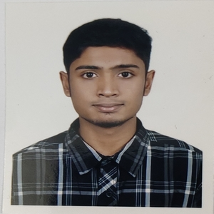

CONTACT
- : samaunhs007@gmail.com
 : 01988146072
: 01988146072 : 38 Lalbag Road, Dhaka
: 38 Lalbag Road, Dhaka
EDUCATION BACKGROUND
Higher Secondary School Certificate
Dhaka City College
September 2020- July 2022
GPA 5.00 out of 5.00
Secondary School Certificate
Nawabpur Govt. High School
Passing year: 2020
GPA 4.39 out of 5.00
REFERENCE
ASM Farhan
Senior Officer
01726252662
Citi Bank N/A
abu.sayeed.mohammad.farhan@citi.com
Samaun Hossain
With a GPA of 5.00, I've completed my HSC and now crave practical skills. In today's fast-paced world, hands-on experience is crucial for professional growth. My impeccable work ethic and attention to detail make me an invaluable asset, trusted and dependable. I firmly believe in open communication and collaborative problem- solving, fostering creativity. Ready to seize the future.
RELEVENT EXPERIENCE
Volunteer Scout
Dhaka City College
(January 2021 - September 2022)
- Passionately engaged as dedicated Volunteer scout in College
- Symbolize persistent dedication to scouting values, developing personal growth, teamwork and comunity involvement.
- Committed to continuous self-improvement,actively participating in scout workshops and conferences.
Extracurricular Activities
Dhaka City College Blood Donors Association
May 2021 - June 2022
- Coordinated successful blood donation events through effective teamwork
- Persuasively communicated with potential donors to inform, address concerns and drive participation
SKILLS
- Excellent Communication
- Creative & Self Motivated
- Adaptive
- Team player
- Computer Skills
ADDISTION SKILLS
- Microsoft Office
- Programming Language
- Web Developing
- Adobe